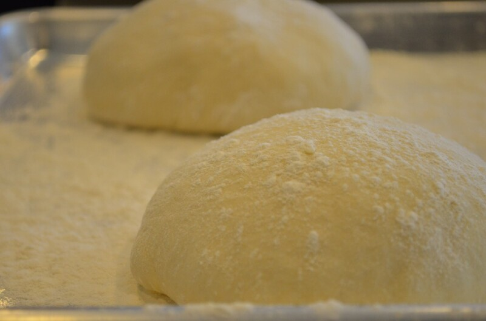

Pizza a la Piedra - Sabrosa y Fácil
Lucite con un clásico

Aquí está el paso a paso, partimos con la harina y aterrizamos en la mesa
Masa
Aproximadamente, 4 bollos
- Agua 400 c.c.
- Harina 1 Kg.
- POOLISH 100 gr.
- Sal 10 gr.
Pizza
- Salsa de tomate 400 gr.
- Hojas de albahaca c/n
- Aceitunas verdes c/n
- Muzzarella rallada 500 gr.
POOLISH
- Levadura fresca 1 gr.
- Harina 50 gr.
- Agua 50 c.c.
¡Pasemos a la acción!
POOLISH
Mezclar harina, agua, levadura y dejar reposar tapado en heladera por una noche.
MASA
- Mezclar harina, sal y en el centro colocar el poolish, agua y comenzar a unir con las manos.
- Amasar hasta formar un bollo liso y dejar levar por una hora
- Desgasificar, hacer bollos de 250 gramos y dejar levar en placa enharinada tapados por 60 minutos a temperatura ambiente y en heladera por una noche
Así deberían lucir los bollos

Armado
- Con las manos, y sin apretar los bordes, dar forma circular a cada masa (1/2 cm de espesor)
- En el centro agregar salsa de tomates, muzzarella, hojas de albahaca y aceitunas verdes.
- llevar al piso del horno a 220° C por 10 minutos
Hasta aca el trabajo (bien hecho!). Ahora, a juntarse y disfrutar; ah! no olvidarse del vino tinto, o la cerveza.